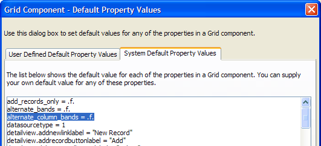
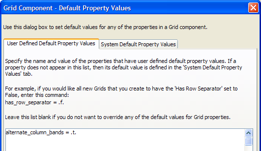

Setting Default Property Values
To change the default values for properties in a grid component:
Display the Web Projects Control Panel.
Edit any existing grid component or create a new component.
Select Options > Set Default Properties.
Display the System Default Property Values tab.
Select and copy the property that you would like to change. For example:

Switch to the User Defined Default Property Values tab.
Paste the property and change its default value. For example:

Click OK to save your changes.
See Also
Setting Grid Control Properties, Setting Grid Properties, Defining Property Overrides
Limitations
Web publishing applications only.